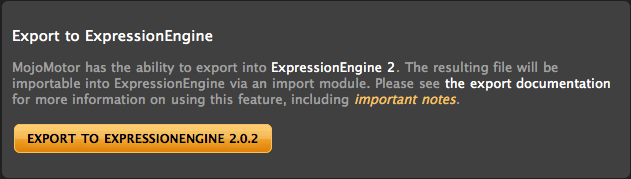

Utilities

Export to ExpressionEngine
The ExpressionEngine exporter creates a file that can be used to quickly import your data into ExpressionEngine.
MojoMotor data is intended to be imported into a new ExpressionEngine installation. Existing ExpressionEngine sites may have trouble importing data. Always back up your data before attempting imports.
The MojoMotor contact form will need to be manually converted after the export has been completed. Note that the ExpressionEngine Contact Form requires a "from" field which will not be present in your MojoMotor form.
Exporting from MojoMotor to ExpressionEngine
- Click Export to ExpressionEngine and save the resulting file
- Prepare your ExpressionEngine Install
- Fully read the ExpressionEngine Installation Documentation
- If you have renamed your system folder for MojoMotor? Rename your ExpressionEngine system folder to match.
- If you have renamed your index.php file for MojoMotor? Rename your ExpressionEngine system folder to match.
- Run the ExpressionEngine Installation Wizard
- Select 'None- Empty Installation' as your default template design.
- In 'Optional Modules', check the Pages module and the Member module (at a minimum) as they will be needed by the importer.
- When creating your ExpressionEngine Administrator, if you use an email address that matches the username of a MojoMotor member, that MojoMotor member will be skipped in the import.
- Install the MojoMotor importer module
- Unzip the MojoMotor Importer and place the mojomotor_import folder in /system/expressionengine/third_party/
- Login to ExpressionEngine and visit Add-Ons > Modules. Click the Install link for the MojoMotor Importer and then click on MojoMotor Importer to open the module's control panel.
- Upload the file you saved in step 1.
Understanding How MojoMotor Data Maps to ExpressionEngine
- Each MojoMotor Layout of the type Webpage or Embed Content will have an ExpressionEngine Channel created to hold associated page data. The Channel will have the same name as the layout. In addition, a Custom Field Group of the same name will be created.
- Each Page Region will have the data associated with it imported as a new channel entry assigned to the Channel named for the Page Region's Layout. The author of each entry will be the logged in user who runs the import.
- Each Global Region will have it's data imported as a Snippet.
- Each MojoMotor Layout will be converted to an ExpressionEngine template.
- For Webpage type layouts, a template group will be created with the same name as the layout and the layout content will be in that group's index template.
- For Stylesheet, Javascript and Embed Content layouts, a template group named 'EE_globals' will be created and each of these layouts will be converted to a template with the same name, housed in the EE_globals template group.
- MojoMotor Tags will be converted to ExpressionEngine tags as follows:
- {mojo:site:site_name} -> {site_name}
- {mojo:site:page_list} tags do not have an ExpressionEngine counterpart so each tag's output is turned into a snippet with the snippet name prefixed by page_list_
- {mojo:page:tag} tags will be converted to their corresponding Custom Field and wrapped in a properly constructed Channel Entries Tag
- {mojo:site:site_url} -> {site_url}
- {mojo:site:asset_url} -> {asset_url} snippet
- {mojo:site:link}about -> {path='about'}
- {mojo:site:login} -> {path='member/login'}
- {mojo:layout:stylesheet stylesheet="styles"} -> {stylesheet="styles"}
- {mojo:layout:javascript script="myscript"} -> {path='myscript'}
- {mojo:layout:append_content} -> {append_content_layout_name} snippet
- {mojo:layout:embed layout="header"} -> {embed="header"}
- {mojo:setting:version} -> {app_version}
- Comment tags work the same in ExpressionEngine, thus no conversion is needed
- Members are imported into ExpressionEngine, with 'Members' assigned to the Member group and 'Admins' assigned to the Superadmin group. By default, only the Superadmin group has access to the Control Panel.
- The username and screen name in ExpressionEngine will be the email address from MojoMotor.
- If an identical member email already exists in ExpressionEngine, it will skip that MojoMotor member during the import process.